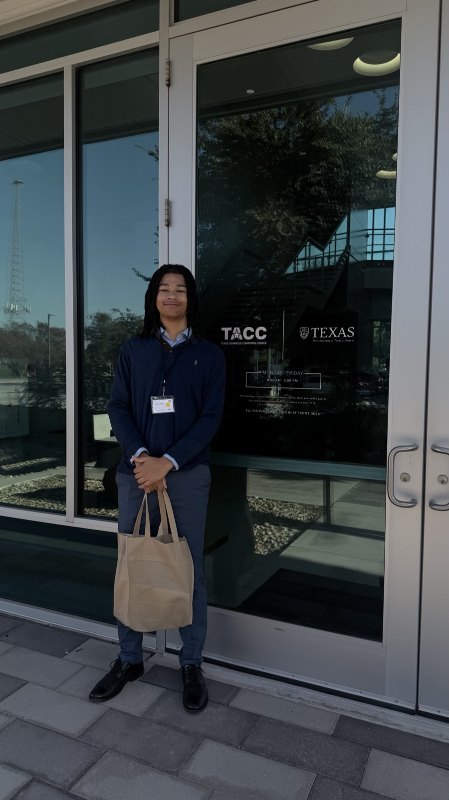

Teaching a Language Model to Sort Consumer Complaints
I fine-tuned a small open language model to sort real complaints from the CFPB Consumer Complaint Database into six categories, then trained it across multiple GPU nodes on the Vista supercomputer to measure the speedup. I worked solo in the morning and served as my team's Reporter in the afternoon.
- 17% → 84%accuracy before and after fine-tuning
- 240 sto train on one GPU
- 3.2xspeedup on 4 nodes